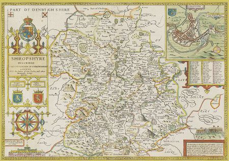
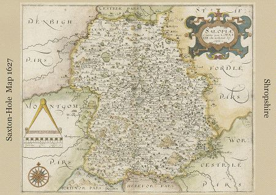
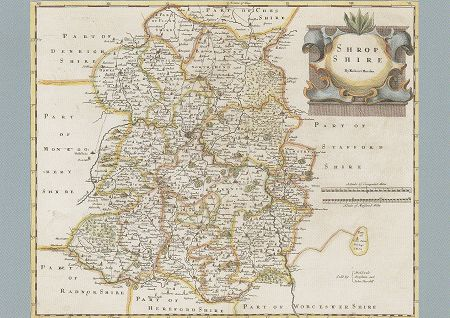

Shropshire is a county in the West Midlands, to the west of the county is Wales, to the north Cheshire, to the east Staffordshire, and to the south Worcestershire and Herefordshire.
As well as Shropshire, the county still goes by its old name of Salop, in fact Shropshire's residents are referred to as "Salopians".
A county council was first established in 1889 and was called Salop County Council; following the Local Government Act 1972, Salop became the official name for the county. However, the name was not favoured by the residents and following a campaign to have it changed, the country and the council were renamed as Shropshire in 1980.
Shropshire came into existence as a unit of government in the early 10th Century. The first known recorded mention of Shropshire is in the Anglo-Saxon Chronicle annal for 1006.
During the middle ages, the extent of the county varied quite considerably as large areas were lost from the jurisdiction of the sheriff to the Marcher lords. The county largely took its present form under the reign of Henry VIII when the Marcher lordships were abolished.
The origin of the name is thought to be from the Old English Scrobbesbyrigscir (this literally translates as "Shrewsburyshire"), which means "the shire of the fortified place in the scrublands (or shrubs)". Alternatively, it has been suggested the name could derive from a personal name such as Scrope (also spelt Scrobbe).
The Normans, however, found the name difficult to pronounce and so softened the name to be "Salopesberia" and "Salopescira" (hence Salop).
Click on the links above to explore more.

Speed, 1611

Saxton/Hole 1627

Morden, 1695